Staring Array Module (rystare)¶
Overview¶
This module provides a high level model for CCD and CMOS staring array signal chain modelling. The model accepts an input image in photon rate irradiance units and then proceeds to calculate the various noise components and signal components along the signal flow chain.
The code in this module serves as an example of implementation of a high-level CCD/CMOS photosensor signal chain model. The model is described in the article ‘High-level numerical simulations of noise in solid-state photosensors: review and tutorial’ by Mikhail Konnik and James Welsh. The code was originally written in Matlab and used for the Adaptive Optics simulations and study of noise propagation in wavefront sensors, but can be used for many other applications involving light registration on CCD/CMOS photosensors. The original files are available at:
- Paper: http://arxiv.org/pdf/1412.4031.pdf
- Matlab code: https://bitbucket.org/aorta/highlevelsensorsim
The original Matlab code was ported to Python and extended in a number of ways. The core of the model remains the original Konnik model as implemented in the Matlab code. The Python code was validated against results obtained with the Matlab code, up to a point and then substantially reworked and refactored. During the refactoring due diligence was applied with regression testing, checking the new results against the previous results.
The documentation in the code was copied from Konnik’s Matlab code, so he deserves all credit for the very detailed documentation. His documentation was extracted from the paper quoted above.
The sample code in the repository models two different cases (from Konnik’s code)
- a simple model: which is completely linear (no non-linearities), where all noise are basically Gaussian, and without source follower noise,
- an advanced model: which has V/V and V/e non-linearities, Wald or lognormal noise, source follower and sense node noise sources and even ADC non-linearities.
The code supports enabling/disabling of key components by using flags.
In the documentation for the Matlab code Konnik expressed the hope “that this model will be useful for somebody, or at least save someone’s time. The model can be (and should be) criticized.” Indeed it has, thanks Mikhail! Konnik quotes George E. P. Box, the famous statistician, and who said that “essentially, all models are wrong, but some are useful”.
Signal Flow¶
The process from incident photons to the digital numbers appearing in the image is outlined in the picture below. First the input image is provided in photon rate irradiance, with photon noise already present in the image. The count of photons captured in the detector is determined from the irradiance by accounting for the detector area and integration time. Then, the code models the process of conversion from photons to electrons and subsequently to signal voltage. Various noise sources are modelled to derive at a realistic image model. Finally, the ADC converts the voltage signal into digital numbers. The whole process is depicted in the figure below.
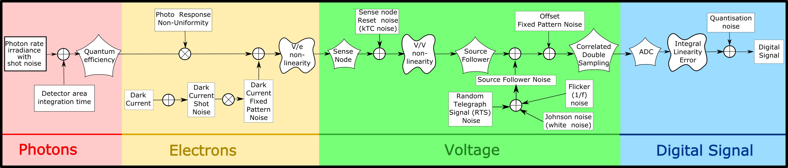{kind=link}
Many noise sources contribute to the resulting noise image that is produced by the sensor. Noise sources can be broadly classified as either fixed-pattern (time-invariant) or temporal (time-variant) noise. Fixed-pattern noise refers to any spatial pattern that does not change significantly from frame to frame. Temporal noise, on the other hand, changes from one frame to the next. All these noise sources are modelled in the code. For more details see Konnik’s original paper or the docstrings present in the code.
Changes to Matlab code¶
- Renamed many, if not all, variables to be more descriptive.
- Created a number of new functions by splitting up the Matlab functions for increased modularity.
- Store (almost) all input and output variables in an HDF5 file for full record keeping.
- Precalculate the image data input as HDF5 files with linear detector parameters embedded in the file. This was done to support future image size calculations. The idea is to embed the target frequency in the data file to relate observed performance with the frequency on the focal plane.
- Moved sourcefollower calcs out from under dark signal flag. sourcefollower noise is now always calculated irrespective of whether dark noise is selected or not.
- Input image now photon rate irradiance q/(m2.s), image should already include photon noise in input. Removed from ccd library: irradiance from radiant to photon units, adding photon shot noise. This functionality has been added to the image generation code.
- Both CCD and CMOS now have fill factors, the user can set CCD fill factor differently from CMOS fill factor. The fill factor value is used as-in in the rest of the code, without checking for CCD or CMOS. This is done because CCD fill factor is 1.0 for full frame sensors but can be less than 1.0 for other types of CCD.
- Now uses SciPy’s CODATA constants where these are available.
- Put all of the code into a single file rystare.py in the pyradi repository.
- Minor changes to Konnik’s excellent documentation to be Sphinx compatible. Documentation is now generated as part of the pyradi documentation.
Example Code¶
The two examples provided by Konnik are merged into a single code, with flags to select between the two options. The code is found at the end of the module file in the __main__ part of the module file. Set doTest = ‘Simple’ or doTest = ‘Advanced’ depending on which model. Either example will run the photosensor function thoroughly documented in the Python code. The two prepared image files are both 256x256 in size. New images can be generated following the example shown in the __main__ part of the module file (using the function create_HDF5_image).
The easiest way to run the code is to open a command window in the installation directory and run the run_example function in the module code. This will load the module and execute the example code function. This will create files with names similar to
Towards the end of the code there are several commented lines that can be uncommented to create plots and graphs.
Some time in future an IPython notebook will be released on https://github.com/NelisW/ComputationalRadiometry.
HDF5 File¶
The Python implementation of the model uses an HDF5 file to capture the input and output data for record keeping or subsequent analysis. HDF5 files provide for hierarchical data structures and easy read/save to disk. See the file hdf5-as-data-format.md for more detail.
Input images are written to and read from HDF5 files as well. These files store the image as well as the images’ dimensional scaling in the focal plane. The intent is to later create test targets with specific spatial frequencies in these files.
Example application¶
todo
Code Overview¶
This module provides a high level model for CCD and CMOS staring array signal chain modelling. The work is based on a paper and Matlab code by Mikhail Konnik, available at:
- Paper available at: http://arxiv.org/pdf/1412.4031.pdf
- Matlab code available at: https://bitbucket.org/aorta/highlevelsensorsim
See the documentation at http://nelisw.github.io/pyradi-docs/_build/html/index.html or pyradi/doc/rystare.rst for more detail.
Module functions¶
- pyradi.rystare.photosensor(strh5)¶
This routine simulates the behaviour of a CCD/CMOS sensor, performing the conversion from irradiance to electrons, then volts, and then digital numbers.
The process from incident photons to the digital numbers appeared on the image is outlined. First of all, the radiometry is considered. Then, the process of conversion from photons to electrons is outlined. Following that, conversion from electrons to voltage is described. Finally, the ADC converts the voltage signal into digital numbers. The whole process is depicted on Figure below.
Many noise sources contribute to the resulting noise image that is produced by photosensors. Noise sources can be broadly classified as either fixed-pattern (time-invariant) or temporal (time-variant) noise. Fixed-pattern noise refers to any spatial pattern that does not change significantly from frame to frame. Temporal noise, on the other hand, changes from one frame to the next.
Note that in the sequence below we add signal and noise signals linearly together. For uncorrelated noise sources, the noise power values are added in quadrature, but that does not apply here, because we are adding instantaneous noise values (per pixel) so that these noise and signal values add linearly.
- Args:
- strh5 (hdf5 file): hdf5 file that defines all simulation parameters
- Returns:
- in strh5: (hdf5 file) updated data fields
- Raises:
- No exception is raised.
Author: Mikhail V. Konnik, revised/ported by CJ Willers
Original source: http://arxiv.org/pdf/1412.4031.pdf
- pyradi.rystare.source_follower(strh5)¶
The amplification of the voltage from Sense Node by Source Follower.
Conventional sensor use a floating-diffusion sense node followed by a charge-to-voltage amplifier, such as a source follower.

Source follower is one of basic single-stage field effect transistor (FET) amplifier topologies that is typically used as a voltage buffer. In such a circuit, the gate terminal of the transistor serves as the input, the source is the output, and the drain is common to both input and output. At low frequencies, the source follower has voltage gain:
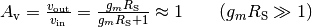
Source follower is a voltage follower, its gain is less than 1. Source followers are used to preserve the linear relationship between incident light, generated photoelectrons and the output voltage.
The V/V non-linearity affect shot noise (but does not affect FPN curve) and can cause some shot-noise probability density compression. The V/V non-linearity non-linearity is caused by non-linear response in ADC or source follower.
The V/V non-linearity can be simulated as a change in source follower gain as a linear function of signal:
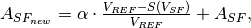
where and 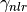 is a non-linearity ratio of . In the simulation we assume and 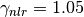 i.e. 5% of non-linearity of . Then the voltage is multiplied on the new sense node gain
 :
: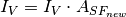
After that, the voltage goes to ADC for quantisation to digital numbers.
- Args:
- strh5 (hdf5 file): hdf5 file that defines all simulation parameters
- Returns:
- in strh5: (hdf5 file) updated data fields
- Raises:
- No exception is raised.
Author: Mikhail V. Konnik, revised/ported by CJ Willers
Original source: http://arxiv.org/pdf/1412.4031.pdf
- pyradi.rystare.cds(strh5)¶
Reducing the noise by Correlated Double Sampling, but right now the routine just adds the noise.
Correlated Double Sampling (CDS) is a technique for measuring photo voltage values that removes an undesired noise. The sensor’s output is measured twice. Correlated Double Sampling is used for compensation of Fixed pattern noise caused by dark current leakage, irregular pixel converters and the like. It appears on the same pixels at different times when images are taken. It can be suppressed with noise reduction and on-chip noise reduction technology. The main approach is CDS, having one light signal read by two circuits.
In CDS, a circuit measures the difference between the reset voltage and the signal voltage for each pixel, and assigns the resulting value of charge to the pixel. The additional step of measuring the output node reference voltage before each pixel charge is transferred makes it unnecessary to reset to the same level for each pixel.
First, only the noise is read. Next, it is read in combination with the light signal. When the noise component is subtracted from the combined signal, the fixed-pattern noise can be eliminated.
CDS is commonly used in image sensors to reduce FPN and reset noise. CDS only reduces offset FPN (gain FPN cannot be reduced using CDS). CDS in CCDs, PPS, and photogate APS, CDS reduces reset noise, in photodiode APS it increases it See Janesick’s book and especially El Gamal’s lectures.
- Args:
- strh5 (hdf5 file): hdf5 file that defines all simulation parameters
- Returns:
- in strh5: (hdf5 file) updated data fields
- Raises:
- No exception is raised.
Author: Mikhail V. Konnik, revised/ported by CJ Willers
Original source: http://arxiv.org/pdf/1412.4031.pdf
- pyradi.rystare.adc(strh5)¶
An analogue-to-digital converter (ADC) transforms a voltage signal into discrete codes.
An analogue-to-digital converter (ADC) transforms a voltage signal into discrete codes. An
 -bit ADC has 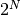 possible output codes with the difference between code
being 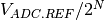. The resolution of the ADC indicates the number of
discrete values that can be produced over the range of analogue values and can
be expressed as:
-bit ADC has 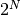 possible output codes with the difference between code
being 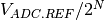. The resolution of the ADC indicates the number of
discrete values that can be produced over the range of analogue values and can
be expressed as:where 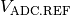 is the maximum voltage that can be quantified, 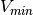 is minimum quantifiable voltage, and 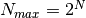 is the number of voltage intervals. Therefore, the output of an ADC can be represented as:
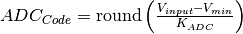
The lower the reference voltage , the smaller the range of the voltages one can measure.
After the electron matrix has been converted to voltages, the sense node reset noise and offset FPN noise are added, the V/V gain non-linearity is applied (if desired), the ADC non-linearity is applied (if necessary). Finally the result is multiplied by ADC gain and rounded to produce the signal as a digital number:
where is the total voltage signal accumulated during one frame acquisition, is the maximum voltage that can be quantified by an ADC, and 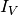 is the total voltage signal accumulated by the end of the exposure (integration) time and conversion. Usually 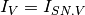 after the optional V/V non-linearity is applied. In this case, the conversion from voltages to digital signal is linear. The adcnonlinearity “non-linear ADC case is considered below”.
In terms of the ADC, the following non-linearity and noise should be considered for the simulations of the photosensors: Integral Linearity Error, Differential Linearity Error, quantisation error, and ADC offset.
The DLE indicates the deviation from the ideal 1 LSB (Least Significant Bit) step size of the analogue input signal corresponding to a code-to-code increment. Assume that the voltage that corresponds to a step of 1 LSB is 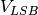. In the ideal case, a change in the input voltage of causes a change in the digital code of 1 LSB. If an input voltage that is more than is required to change a digital code by 1 LSB, then the ADC has DLE error. In this case, the digital output remains constant when the input voltage changes from, for example, 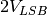 to , therefore corresponding the digital code can never appear at the output. That is, that code is missing.

In the illustration above, each input step should be precisely 1/8 of reference voltage. The first code transition from 000 to 001 is caused by an input change of 1 LSB as it should be. The second transition, from 001 to 010, has an input change that is 1.2 LSB, so is too large by 0.2 LSB. The input change for the third transition is exactly the right size. The digital output remains constant when the input voltage changes from 4 LSB to 5 LSB, therefore the code 101 can never appear at the output.
The ILE is the maximum deviation of the input/output characteristic from a straight line passed through its end points. For each voltage in the ADC input, there is a corresponding code at the ADC output. If an ADC transfer function is ideal, the steps are perfectly superimposed on a line. However, most real ADC’s exhibit deviation from the straight line, which can be expressed in percentage of the reference voltage or in LSBs. Therefore, ILE is a measure of the straightness of the transfer function and can be greater than the differential non-linearity. Taking the ILE into account is important because it cannot be calibrated out.

For each voltage in the ADC input there is a corresponding word at the ADC output. If an ADC is ideal, the steps are perfectly superimposed on a line. But most of real ADC exhibit deviation from the straight line, which can be expressed in percentage of the reference voltage or in LSBs.
In our model, we simulate the Integral Linearity Error (ILE) of the ADC as a dependency of ADC gain on the signal value. Denote 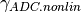 as an ADC non-linearity ratio (e.g., 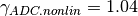). The linear ADC gain can be calculated from Eq.~ref{eq:kadc} as 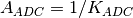 and used as . The non-linearity coefficient 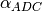 is calculated as:
where is the maximum voltage that can be quantified by an ADC:
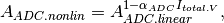
where is the linear ADC gain. The new non-linear ADC conversion gain is then used for the simulations.
Quantisation errors are caused by the rounding, since an ADC has a finite precision. The probability distribution of quantisation noise is generally assumed to be uniform. Hence we use the uniform distribution to model the rounding errors.
It is assumed that the quantisation error is uniformly distributed between -0.5 and +0.5 of the LSB and uncorrelated with the signal. Denote the quantising step of the ADC. For the ideal DC, the quantisation noise is:
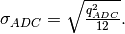If 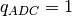 then the quantisation noise is 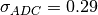 DN. The quantisation error has a uniform distribution. We do not assume any particular architecture of the ADC in our high-level sensor model. This routine performs analogue-to-digital convertation of volts to DN.
- Args:
- strh5 (hdf5 file): hdf5 file that defines all simulation parameters
- Returns:
- in strh5: (hdf5 file) updated data fields
- Raises:
- No exception is raised.
Author: Mikhail V. Konnik, revised/ported by CJ Willers
Original source: http://arxiv.org/pdf/1412.4031.pdf
- pyradi.rystare.sense_node_chargetovoltage(strh5)¶
The charge to voltage conversion occurs inside this routine, which simulates Sense Node. After that, a new matrix strh5[‘rystare/SignalVoltage’] is created and the raw voltage signal is stored.
After the charge is generated in the pixel by photo-effect, it is moved row-by-row to the sense amplifier that is separated from the pixels in case of CCD. The packets of charge are being shifted to the output sense node, where electrons are converted to voltage. The typical sense node region is presented on Figure below.

Sense node is the final collecting point at the end of the horizontal register of the CCD sensor. The CCD pixels are made with MOS devices used as reverse biased capacitors. The charge is readout by a MOSFET based charge to voltage amplifier. The output voltage is inversely proportional to the sense node capacitor. Typical example is that the sense node capacitor of the order 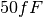, which produces a gain of 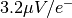. It is also important to minimize the noise of the output amplifier, textbf{typically the largest noise source in the system}. Sense node converts charge to voltage with typical sensitivities 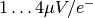.
The charge collected in each pixel of a sensor array is converted to voltage by sense capacitor and source-follower amplifier.
Reset noise is induced during such conversion. Prior to the measurement of each pixel’s charge, the CCD sense capacitor is reset to a reference level. Sense node converts charge to voltage with typical sensitivities . The charge collected in each pixel of a sensor array is converted to voltage by sense capacitor and source-follower amplifier. Reset noise is induced during such conversion. Prior to the measurement of each pixel’s charge, the CCD sense node capacitor is reset to a reference level.
Sense Node gain non-linearity, or V/e non-linearity
The V/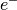 non-linearity affect both FPN and shot noise and can cause some shot-noise probability density compression. This type of non-linearity is due to sense node gain non-linearity. Then sense node sensitivity became non-linear (see Janesick’s book):
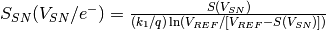
The V/ non-linearity can be expressed as a non-linear dependency of signals in electron and a sense-node voltage:
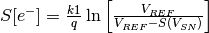
The V/ non-linearity affects photon shot noise and skews the distribution, however this is a minor effect. The V/ non-linearity can also be thought as a sense node capacitor non-linearity: when a small signal is measured, is fixed or changes negligible; on the other hand, changes significantly and that can affect the signal being measured.
For the simulation purpose, the V/ non-linearity can be expressed as:
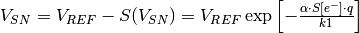
where 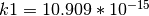 and
 is the charge of an electron, and 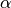 is the coefficient of
non-linearity strength.
is the charge of an electron, and 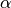 is the coefficient of
non-linearity strength.- Args:
- strh5 (hdf5 file): hdf5 file that defines all simulation parameters
- Returns:
- in strh5: (hdf5 file) updated data fields
- Raises:
- No exception is raised.
Author: Mikhail V. Konnik, revised/ported by CJ Willers
Original source: http://arxiv.org/pdf/1412.4031.pdf
- pyradi.rystare.sense_node_reset_noise(strh5)¶
This routine calculates the noise standard deviation for the sense node reset noise.
Sense node Reset noise (kTC noise)
Prior to the measurement of each pixel’s charge packet, the sense node capacitor is reset to a reference voltage level. Noise is generated at the sense node by an uncertainty in the reference voltage level due to thermal variations in the channel resistance of the MOSFET reset transistor. The reference level of the sense capacitor is therefore different from pixel to pixel.
Because reset noise can be significant (about 50 rms electrons), most high-performance photosensors incorporate a noise-reduction mechanism such as correlated double sampling (CDS).
The kTC noise is occurs in CMOS sensors, while for CCD sensors the sense node reset noise is removed~ (see Janesick’s book) by Correlated Double Sampling (CDS). Random fluctuations of charge on the sense node during the reset stage result in a corresponding photodiode reset voltage fluctuation. The sense node reset noise is given by:
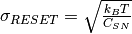
The simulation of the sense node reset noise may be performed as an addition of non-symmetric probability distribution to the reference voltage 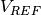. However, the form of distribution depends on the sensor’s architecture and the reset technique. An Inverse-Gaussian distribution can be used for the simulation of kTC noise that corresponds to a hard reset technique in the CMOS sensor, and the Log-Normal distribution can be used for soft-reset technique. The sense node reset noise can be simulated for each 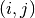-th pixel for the soft-reset case as:
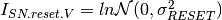
then added to the matrix 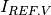 in Volts that corresponds to the reference voltage.
Note: For CCD, the sense node reset noise is entirely removed by CDS.
Note: In CMOS photosensors, it is difficult to remove the reset noise for the specific CMOS pixels architectures even after application of CDS. Specifically, the difficulties arise in ‘rolling shutter’ and ‘snap’ readout modes. The reset noise is increasing after CDS by a factor of
 .
Elimination of reset noise in CMOS is quite challenging.
.
Elimination of reset noise in CMOS is quite challenging.- Args:
- strh5 (hdf5 file): hdf5 file that defines all simulation parameters
- Returns:
- in strh5: (hdf5 file) updated data fields
- Raises:
- No exception is raised.
Author: Mikhail V. Konnik, revised/ported by CJ Willers
Original source: http://arxiv.org/pdf/1412.4031.pdf
- pyradi.rystare.dark_current_and_dark_noises(strh5)¶
This routine for adding dark current signals and noises, including dark FPN and dark shot noise.
The dark signal is calculated for all pixels in the model. It is implemented using ones function in MATLAB as a matrix of the same size as the simulated photosensor. For each -th pixel we have:
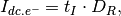
where is the average dark current:
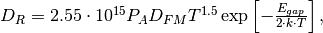
where: 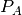 is the pixel’s area [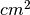]; 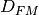 is the dark current figure-of-merit at 300K [nA/], varies significantly; with sensor manufacturer, and used in this simulations as 0.5 nA/; 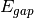 is the bandgap energy of the semiconductor which also varies with temperature;
 is Boltzman’s constant that is 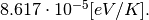
is Boltzman’s constant that is 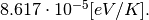The relationship between band gap energy and temperature can be described by Varshni’s empirical expression,
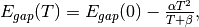
where
 , and 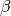 are material constants. The energy bandgap of
semiconductors tends to decrease as the temperature is increased. This behaviour can be better understood
if one considers that the inter-atomic spacing increases when the amplitude of the atomic vibrations
increases due to the increased thermal energy. This effect is quantified by the linear expansion
coefficient of a material.
, and 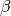 are material constants. The energy bandgap of
semiconductors tends to decrease as the temperature is increased. This behaviour can be better understood
if one considers that the inter-atomic spacing increases when the amplitude of the atomic vibrations
increases due to the increased thermal energy. This effect is quantified by the linear expansion
coefficient of a material.For the Silicon: , [eV/K], and 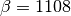 [K].
It appears that fill factor does not apply to dark noise (Janesick book p168 and Konnik’s code does not show this).
- Args:
- strh5 (hdf5 file): hdf5 file that defines all simulation parameters
- Returns:
- in strh5: (hdf5 file) updated data fields
- Raises:
- No exception is raised.
Author: Mikhail V. Konnik, revised/ported by CJ Willers
Original source: http://arxiv.org/pdf/1412.4031.pdf
- pyradi.rystare.source_follower_noise(strh5)¶
The source follower noise routine.
The pixel’s source follower noise limits the read noise, however in high-end CCD and CMOS cameras the source follower noise has been driven down to one electron rms. Pixel source follower MOSFET noise consists of three types of noise: - white noise; - flicker noise; - random telegraph noise (RTS). Each type of noise has its own physics that will be briefly sketched below.
Johnson noise (white noise)
Similarly to the reset noise in sense node, the source-follower amplifier MOSFET has a resistance that generates thermal noise whose value is governed by the Johnson white noise equation. It is therefore either referred to as Johnson noise or simply as white noise, since its magnitude is independent of frequency. If the effective resistance is considered to be the output impedance of the source-follower amplifier, the white noise, in volts, is determined by the following equation:
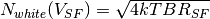
where
is Boltzmann’s constant (J/K),  is temperature [K],
is temperature [K],  refers to the noise power bandwidth [Hz],
and 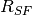 is the output impedance of the source-follower amplifier.
refers to the noise power bandwidth [Hz],
and 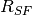 is the output impedance of the source-follower amplifier.Flicker noise
The flicker noise is commonly referred to as noise because of its approximate inverse dependence on frequency. For cameras in which pixels are read out at less than approximately 1 megahertz, and with a characteristic noise spectrum, the read noise floor is usually determined by 1/f noise. Note that the noise continues to decrease at this rate until it levels off, at a frequency referred to as the corner frequency. For the typical MOSFET amplifier, the white noise floor occurs at approximately 4.5 .
Prominent sources of noise in an image sensor are pink-coloured noise generated in the photo-diodes and the low-bandwidth analogue operation of MOS transistors due to imperfect contacts between two materials. Flicker noise is generally accepted to originate due to the existence of interface states in the image sensor silicon that turn on and off randomly according to different time constants. All systems exhibiting 1/f behaviour have a similar collection of randomly-switching states. In the MOSFET, the states are traps at the silicon-oxide interface, which arise because of disruptions in the silicon lattice at the surface. The level of noise in a CCD sensor depends on the pixel sampling rate and from certain crystallographic orientations of silicon wafer.
Random Telegraph Signal (RTS) noise
As the CCD and CMOS pixels are shrinking in dimensions, the low-frequency noise increases. In such devices, the low-frequency noise performance is dominated by Random Telegraph Signals (RTS) on top of the 1/f noise. The origin of such an RTS is attributed to the random trapping and de-trapping of mobile charge carriers in traps located in the oxide or at the interface. The RTS is observed in MOSFETs as a fluctuation in the drain current. A pure two-level RTS is represented in the frequency domain by a Lorentzian spectrum.
Mathematically the source follower’s noise power spectrum can be described as:
where is the thermal white noise [, typically ], flicker noise corner frequency in [Hz] (flicker noise corner frequency is the frequency where power spectrum of white and flicker noise are equal), and the RTS power spectrum is given (see Janesick’s book):
where is the RTS characteristic time constant [sec] and is the source follower current modulation induced by RTS [A].
The source follower noise can be approximated as:
where: - is the source follower noise [e- rms] -
 is the electrical frequency [Hz]
- is the CDS sample-to-sampling time [sec]
- is the CDS dominant time constant (see Janesick’s Scientific CCDs book) usually set as [sec].
is the electrical frequency [Hz]
- is the CDS sample-to-sampling time [sec]
- is the CDS dominant time constant (see Janesick’s Scientific CCDs book) usually set as [sec].The function is the CDS transfer function is (see Janesick’s book):
First term sets the CDS bandwidth for the white noise rejection before sampling takes place through , where
is defined as the noise equivalent bandwidth [Hz].Note: In CCD photosensors, source follower noise is typically limited by the flicker noise.
Note: In CMOS photosensors, source follower noise is typically limited by the RTS noise. As a side note, such subtle kind of noises is visible only on high-end ADC like 16 bit and more.
- Args:
- strh5 (hdf5 file): hdf5 file that defines all simulation parameters
- Returns:
- in strh5: (hdf5 file) updated data fields
- Raises:
- No exception is raised.
Author: Mikhail V. Konnik, revised/ported by CJ Willers
Original source: http://arxiv.org/pdf/1412.4031.pdf
- pyradi.rystare.set_photosensor_constants(strh5)¶
Defining the constants that are necessary for calculation of photon energy, dark current rate, etc.
- Args:
- strh5 (hdf5 file): hdf5 file that defines all simulation parameters
- Returns:
- in strh5: (hdf5 file) updated data fields
- Raises:
- No exception is raised.
Author: Mikhail V. Konnik, revised/ported by CJ Willers
Original source: http://arxiv.org/pdf/1412.4031.pdf
- pyradi.rystare.create_data_arrays(strh5)¶
Create the arrays to store the various image-sized variables.
- Args:
- strh5 (hdf5 file): hdf5 file that defines all simulation parameters
- Returns:
- in strh5: (hdf5 file) updated data fields
- Raises:
- No exception is raised.
Author: Mikhail V. Konnik, revised/ported by CJ Willers
Original source: http://arxiv.org/pdf/1412.4031.pdf
- pyradi.rystare.image_irradiance_to_flux(strh5)¶
This routine converts irradiance to flux, using detector area
- Args:
- strh5 (hdf5 file): hdf5 file that defines all simulation parameters
- Returns:
- in strh5: (hdf5 file) updated data fields
- Raises:
- No exception is raised.
Author: Mikhail V. Konnik, revised/ported by CJ Willers
Original source: http://arxiv.org/pdf/1412.4031.pdf
- pyradi.rystare.convert_to_electrons(strh5)¶
This routine converts photon rate to photon count and process photo response non-uniformity, PRNU.
The input to the model of the photosensor is assumed to be a matrix that corresponds to the photon rate irradiance [q/(m2.s)]. The irradiance is converted to photon count into the pixel by accounting for detector pixel area and integration time:
where is the area of a pixel [m2], and is integration (exposure) time.
- Args:
- strh5 (hdf5 file): hdf5 file that defines all simulation parameters
- Returns:
- in strh5: (hdf5 file) updated data fields
- Raises:
- No exception is raised.
Author: Mikhail V. Konnik, revised/ported by CJ Willers
Original source: http://arxiv.org/pdf/1412.4031.pdf
- pyradi.rystare.shotnoise(sensor_signal_in)¶
This routine adds photon shot noise to the signal of the photosensor that is in photons.
The photon shot noise is due to the random arrival of photons and can be described by a Poisson process. Therefore, for each -th element of the matrix that contains the number of collected photons, a photon shot noise is simulated as a Poisson process with mean :
We use the ryutils.poissonarray function that generates Poisson random numbers with mean . That is, the number of collected photons in -th pixel of the simulated photosensor in the matrix is used as the mean for the generation of Poisson random numbers to simulate the photon shot noise. The input of the ryutils.poissonarray function will be the matrix that contains the number of collected photons. The output will be the matrix , i.e., the signal with added photon shot noise. The matrix is recalculated each time the simulations are started, which corresponds to the temporal nature of the photon shot noise.
- Args:
- sensor_signal_in (np.array[N,M]): photon irradiance in, in photons
- Returns:
- sensor_signal_out (np.array[N,M]): photon signal out, in photons
- Raises:
- No exception is raised.
Author: Mikhail V. Konnik, revised/ported by CJ Willers
Original source: http://arxiv.org/pdf/1412.4031.pdf
- pyradi.rystare.responsivity_FPN_light(strh5)¶
Adding the PRNU light noise to the sensor signal.
The Photo Response Non-Uniformity (PRNU) is the spatial variation in pixel output under uniform illumination mainly due to variations in the surface area of the photodiodes. This occurs due to variations in substrate material during the fabrication of the sensor. This occurs due to variations in substrate material during the fabrication of the sensor.
The PRNU is signal-dependent (proportional to the input signal) and is fixed-pattern (time-invariant). The PRNU factor is typically for a given sensor, but varies from one sensor to another.
The photo response non-uniformity (PRNU) is considered in our numerical model as a temporally-fixed light signal non-uniformity. The PRNU is modelled using a Gaussian distribution for each -th pixel of the matrix
 ,
as
where is the PRNU factor value.
,
as
where is the PRNU factor value.- Args:
- strh5 (hdf5 file): hdf5 file that defines all simulation parameters
- Returns:
- in strh5: (hdf5 file) updated data fields
- Raises:
- No exception is raised.
Author: Mikhail V. Konnik, revised/ported by CJ Willers
Original source: http://arxiv.org/pdf/1412.4031.pdf
- pyradi.rystare.responsivity_FPN_dark(strh5)¶
Add dark current noises that consist of Dark FPN and Dark shot noise.
Pixels in a hardware photosensor cannot be manufactured exactly the same from perfectly pure materials. There will always be variations in the photo detector area that are spatially uncorrelated, surface defects at the interface (see Sakaguchi paper on dark current reduction), and discrete randomly-distributed charge generation centres. These defects provide a mechanism for thermally-excited carriers to move between the valence and conduction bands. Consequently, the average dark signal is not uniform but has a spatially-random and fixed-pattern noise (FPN) structure. The dark current FPN can be expressed as follows:

where is the integration time, is the average dark current, and is the dark current FPN factor that is typically for CCD and CMOS sensors.
There are also so called ‘outliers’ or ‘dark spikes’; that is, some pixels generate a dark signal values much higher than the mean value of the dark signal. The mechanism of such ‘dark spikes’ or ‘outliers’ can be described by the Poole-Frenkel effect (increase in emission rate from a defect in the presence of an electric field).
Simulation of dark current fixed pattern noise
The dark current Fixed Pattern Noise (FPN) is simulated using non-symmetric distributions to account for the ‘outliers’ or ‘hot pixels’. It is usually assumed that the dark current FPN can be described by Gaussian distribution. However, such an assumption provides a poor approximation of a complicated noise picture.
Studies show that a more adequate model of dark current FPN is to use non-symmetric probability distributions. The concept is to use two distributions to describe very ‘leaky’ pixels that exhibit higher noise level than others. The first distribution is used for the main body of the dark current FPN, with a uniform distribution superimposed to model ‘leaky’ pixels. For simulations at room-temperature ( C) authors use a logistic distribution, where a higher proportion of the population is distributed in the tails. For higher temperatures, inverse Gaussian and Log-Normal distributions have been proposed. The Log-Normal distribution works well for conventional 3T APS CMOS sensors with comparatively high dark current.
In our simulations we use the Log-Normal distribution for the simulation of dark current FPN in the case of short integration times, and superimposing other distributions for long integration times. The actual simulation code implements various models, including Log-Normal, Gaussian, and Wald distribution to emulate the dark current FPN noise for short- and long-term integration times.
The dark current FPN for each pixel of the matrix is computed as:
where , is the average dark current, and is the dark current FPN factor. Since the dark current FPN does not change from one frame to the next, the matrix is calculated once and then can be re-used similar to the PRNU simulations.
The experimental results confirm that non-symmetric models, and in particular the Log-Normal distribution, adequately describe the dark current FPN in CMOS sensors, especially in the case of a long integration time (longer than 30-60 seconds). For long-exposure case, one needs to superimpose two (or more, depending on the sensor) probability distributions.
- Args:
- strh5 (hdf5 file): hdf5 file that defines all simulation parameters
- Returns:
- in strh5: (hdf5 file) updated data fields
- Raises:
- No exception is raised.
Author: Mikhail V. Konnik, revised/ported by CJ Willers
Original source: http://arxiv.org/pdf/1412.4031.pdf
- pyradi.rystare.FPN_models(sensor_signal_rows, sensor_signal_columns, noisetype, noisedistribution, noise_params)¶
The routine contains various models on simulation of Fixed Pattern Noise.
There are many models for simulation of the FPN: some of the models are suitable for short-exposure time modelling (Gaussian), while other models are more suitable for log-exposure modelling of dark current FPN.
Gaussian model (Janesick-Gaussian)
Fixed-pattern noise (FPN) arises from changes in dark currents due to variations in pixel geometry during fabrication of the sensor. FPN increases exponentially with temperature and can be measured in dark conditions. Column FPN is caused by offset in the integrating amplifier, size variations in the integrating capacitor CF, channel charge injection from reset circuit. FPN components that are reduced by CDS. Dark current FPN can be expressed as:
where is the dark current FPN quality, which is typically between 10% and 40% for CCD and CMOS sensors (see Janesick’s book), and . There are other models of dark FPN, for instance as a autoregressive process.
El Gamal model of FPN with Autoregressive process
To capture the structure of FPN in a CMOS sensor we express as the sum of a column FPN component and a pixel FPN component . Thus, where the ‘s and the ‘s are zero mean random variables.
The first assumption is that the random processes and are uncorrelated. This assumption is reasonable since the column and pixel FPN are caused by different device parameter variations. We further assume that the column (and pixel) FPN processes are isotropic.
The idea to use autoregressive processes to model FPN was proposed because their parameters can be easily and efficiently estimated from data. The simplest model, namely first order isotropic autoregressive processes is considered. This model can be extended to higher order models, however, the results suggest that additional model complexity may not be warranted.
The model assumes that the column FPN process is a first order isotropic autoregressive process of the form:
where the s are zero mean, uncorrelated random variables with the same variance , and is a parameter that characterises the dependency of on its two neighbours.
The model assumes that the pixel FPN process is a two dimensional first order isotropic autoregressive process of the form:
where the s are zero mean uncorrelated random variables with the same variance , and is a parameter that characterises the dependency of on its four neighbours.
- Args:
- sensor_signal_rows(int): number of rows in the signal matrixsensor_signal_columns(int): number of columns in the signal matrixnoisetype(int): type of noise to generate: valid are ‘pixel’ or ‘column’noisedistribution(int): the probability distribution namenoise_params(int): a vector of parameters for the probability distribution name
- Returns:
- noiseout (np.array[N,M]): generated noise of FPN.
- Raises:
- No exception is raised.
Author: Mikhail V. Konnik, revised/ported by CJ Willers
Original source: http://arxiv.org/pdf/1412.4031.pdf
- pyradi.rystare.create_HDF5_image(imageName, imtype, pixelPitch, numPixels, fracdiameter=0, fracblurr=0, irrad_scale=0, wavelength=5.5e-07)¶
This routine performs makes a simple illuminated circle with blurred boundaries.
Then the sensor’s radiant irradiance in units [W/m2] are converted to photon rate irradiance in units [q/m2.s)] by relating one photon’s energy to power at the stated wavelength by , where
 is wavelength, is Planck’s constant and
is wavelength, is Planck’s constant and  is
the speed of light.
is
the speed of light.- Args:
- imageName (string): the image name, used to form the filenameimtype (string): string to define the type if image to be created [‘zeros’,’disk’]pixelPitch ([float, float]): detector pitch in m [row,col]numPixels ([int, int]): number of pixels [row,col]fracdiameter (float): diameter of the disk as fraction of minimum image sizefracblurr (float): blurr of the disk as fraction of minimum image sizeirrad_scale (float): multiplicative scale factor (max value)wavelength (float): wavelength where photon rate calcs are done in [m]
- Returns:
- nothing: as a side effect an image file is written
- Raises:
- No exception is raised.
Author: CJ Willers
- pyradi.rystare.define_metrics()¶
This simple routine defines various handy shorthand for cm and mm in the code.
The code defines a number of scaling factors to convert to metres and radians
- Args:
- None
- Returns:
- scaling factors.
- Raises:
- No exception is raised.
Author: Mikhail V. Konnik, revised/ported by CJ Willers
Original source: http://arxiv.org/pdf/1412.4031.pdf
- pyradi.rystare.limitzero(a, thr=0.6)¶
Performs an asymetric clipping to prevent negative values. The lower-end values are clumped up towards the lower positive values, while upper-end values are not affected.
This function is used to prevent negative random variables for wide sigma and low mean value, e.g., N(1,.5). If the random variables are passed through this function The resulting distribution is not normal any more, and has no known analytical form.
A threshold value of around 0.6 was found to work well for N(1,small) up to N(1,.5).
Before you use this function, first check the results using the code below in the main body of this file.
- Args:
- a (np.array): an array of floats,
- Returns:
- scaling factors.
- Raises:
- No exception is raised.
Author: CJ Willers
- pyradi.rystare.distribution_exp(distribParams, out, funcName)¶
Exponential Distribution
This function is meant to be called via the distributions_generator function.
- Mean = 1/lambda
- Variance = 1/lambda^2
- Mode = lambda
- Median = log(2)/lambda
- Skewness = 2
- Kurtosis = 6
GENERATING FUNCTION:
PARAMETERS: distribParams[0] is lambda - inverse scale or rate (lambda>0)
SUPPORT: y, y>= 0
CLASS: Continuous skewed distributions
NOTES: The discrete version of the Exponential distribution is the Geometric distribution.
USAGE:
- y = randraw(‘exp’, lambda, sampleSize) - generate sampleSize number of variates from the Exponential distribution with parameter ‘lambda’;
EXAMPLES:
- y = randraw(‘exp’, 1, [1 1e5]);
- y = randraw(‘exp’, 1.5, 1, 1e5);
- y = randraw(‘exp’, 2, 1e5 );
- y = randraw(‘exp’, 3, [1e5 1] );
SEE ALSO: GEOMETRIC, GAMMA, POISSON, WEIBULL distributions http://en.wikipedia.org/wiki/Exponential_distribution
- pyradi.rystare.distribution_lognormal(distribParams, out, funcName)¶
THe Log-normal Distribution (sometimes: Cobb-Douglas or antilognormal distribution)
This function is meant to be called via the distributions_generator function.
pdf = 1/(y*sigma*sqrt(2*pi)) * exp(-1/2*((log(y)-mu)/sigma)^2) cdf = 1/2*(1 + erf((log(y)-mu)/(sigma*sqrt(2))));
- Mean = exp( mu + sigma^2/2 );
- Variance = exp(2*mu+sigma^2)*( exp(sigma^2)-1 );
- Skewness = (exp(1)+2)*sqrt(exp(1)-1), for mu=0 and sigma=1;
- Kurtosis = exp(4) + 2*exp(3) + 3*exp(2) - 6; for mu=0 and sigma=1;
- Mode = exp(mu-sigma^2);
PARAMETERS: mu - location, sigma - scale (sigma>0)
SUPPORT: y, y>0
CLASS: Continuous skewed distribution
NOTES:
- The LogNormal distribution is always right-skewed
- Parameters mu and sigma are the mean and standard deviation of y in (natural) log space.
- mu = log(mean(y)) - 1/2*log(1 + var(y)/(mean(y))^2)
- sigma = sqrt( log( 1 + var(y)/(mean(y))^2) )
USAGE:
- randraw(‘lognorm’, [], sampleSize) - generate sampleSize number of variates from the standard Lognormal distribution with location parameter mu=0 and scale parameter sigma=1
- randraw(‘lognorm’, [mu, sigma], sampleSize) - generate sampleSize number of variates from the Lognormal distribution with location parameter ‘mu’ and scale parameter ‘sigma’
EXAMPLES:
- y = randraw(‘lognorm’, [], [1 1e5]);
- y = randraw(‘lognorm’, [0, 4], 1, 1e5);
- y = randraw(‘lognorm’, [-1, 10.2], 1e5 );
- y = randraw(‘lognorm’, [3.2, 0.3], [1e5 1] );
- pyradi.rystare.distribution_inversegauss(distribParams, out, funcName)¶
The Inverse Gaussian Distribution
This function is meant to be called via the distributions_generator function.
The Inverse Gaussian distribution is left skewed distribution whose location is set by the mean with the profile determined by the scale factor. The random variable can take a value between zero and infinity. The skewness increases rapidly with decreasing values of the scale parameter.
pdf(y) = sqrt(_lambda/(2*pi*y^3)) * exp(-_lambda./(2*y).*(y/mu-1).^2)
cdf(y) = normcdf(sqrt(_lambda./y).*(y/mu-1)) + exp(2*_lambda/mu)*normcdf(sqrt(_lambda./y).*(-y/mu-1))
where normcdf(x) = 0.5*(1+erf(y/sqrt(2))); is the standard normal CDF
- Mean = mu
- Variance = mu^3/_lambda
- Skewness = sqrt(9*mu/_lambda)
- Kurtosis = 15*mean/scale
- Mode = mu/(2*_lambda)*(sqrt(9*mu^2+4*_lambda^2)-3*mu)
PARAMETERS: mu - location; (mu>0), _lambda - scale; (_lambda>0)
SUPPORT: y, y>0
CLASS: Continuous skewed distribution
NOTES:
- There are several alternate forms for the PDF, some of which have more than two parameters
- The Inverse Gaussian distribution is often called the Inverse Normal
- Wald distribution is a special case of The Inverse Gaussian distribution where the mean is a constant with the value one.
- The Inverse Gaussian distribution is a special case of The Generalized Hyperbolic Distribution
USAGE:
- randraw(‘ig’, [mu, _lambda], sampleSize) - generate sampleSize number of variates from the Inverse Gaussian distribution with parameters mu and _lambda;
EXAMPLES:
- y = randraw(‘ig’, [0.1, 1], [1 1e5]);
- y = randraw(‘ig’, [3.2, 10], 1, 1e5);
- y = randraw(‘ig’, [100.2, 6], 1e5 );
- y = randraw(‘ig’, [10, 10.5], [1e5 1] );
SEE ALSO: WALD distribution
Method:
There is an efficient procedure that utilizes a transformation yielding two roots. If Y is Inverse Gauss random variable, then following [1] we can write: V = _lambda*(Y-mu)^2/(Y*mu^2) ~ Chi-Square(1)
i.e. V is distributed as a _lambda-square random variable with one degree of freedom. So it can be simply generated by taking a square of a standard normal random number. Solving this equation for Y yields two roots:
y1 = mu + 0.5*mu/_lambda * ( mu*V - sqrt(4*mu*_lambda*V + mu^2*V.^2) ); and y2 = mu^2/y1;
In [2] showed that Y can be simulated by choosing y1 with probability mu/(mu+y1) and y2 with probability 1-mu/(mu+y1)
References: [1] Shuster, J. (1968). On the Inverse Gaussian Distribution Function, Journal of the American Statistical Association 63: 1514-1516.
[2] Michael, J.R., Schucany, W.R. and Haas, R.W. (1976). Generating Random Variates Using Transformations with Multiple Roots, The American Statistician 30: 88-90.
- pyradi.rystare.distribution_logistic(distribParams, out, funcName)¶
The Logistic Distribution
This function is meant to be called via the distributions_generator function.
The logistic distribution is a symmetrical bell shaped distribution. One of its applications is an alternative to the Normal distribution when a higher proportion of the population being modeled is distributed in the tails.
pdf(y) = exp((y-a)/k)./(k*(1+exp((y-a)/k)).^2)
cdf(y) = 1 ./ (1+exp(-(y-a)/k))
- Mean = a
- Variance = k^2*pi^2/3
- Skewness = 0
- Kurtosis = 1.2
PARAMETERS: a - location, k - scale (k>0);
SUPPORT: y, -Inf < y < Inf
CLASS: Continuous symmetric distribution
USAGE:
- randraw(‘logistic’, [], sampleSize) - generate sampleSize number of variates from the standard Logistic distribution with location parameter a=0 and scale parameter k=1;
- Logistic distribution with location parameter ‘a’ and scale parameter ‘k’;
EXAMPLES:
- y = randraw(‘logistic’, [], [1 1e5]);
- y = randraw(‘logistic’, [0, 4], 1, 1e5);
- y = randraw(‘logistic’, [-1, 10.2], 1e5 );
- y = randraw(‘logistic’, [3.2, 0.3], [1e5 1] );
Method:
Inverse CDF transformation method.
- pyradi.rystare.distribution_wald(distribParams, out, funcName)¶
The Wald Distribution
This function is meant to be called via the distributions_generator function.
The Wald distribution is as special case of the Inverse Gaussian Distribution where the mean is a constant with the value one.
pdf = sqrt(chi/(2*pi*y^3)) * exp(-chi./(2*y).*(y-1).^2);
- Mean = 1
- Variance = 1/chi
- Skewness = sqrt(9/chi)
- Kurtosis = 3+ 15/scale
PARAMETERS: chi - scale parameter; (chi>0)
SUPPORT: y, y>0
CLASS: Continuous skewed distributions
USAGE:
- randraw(‘wald’, chi, sampleSize) - generate sampleSize number of variates from the Wald distribution with scale parameter ‘chi’;
EXAMPLES:
- y = randraw(‘wald’, 0.5, [1 1e5]);
- y = randraw(‘wald’, 1, 1, 1e5);
- y = randraw(‘wald’, 1.5, 1e5 );
- y = randraw(‘wald’, 2, [1e5 1] );
- pyradi.rystare.distributions_generator(distribName=None, distribParams=None, sampleSize=None)¶
The routine contains various models for simulation of FPN (DSNU or PRNU).
This function allows the user to select the distribution by name and pass requisite parameters in a list (which differs for different distrubutions). The size of the distribution is defined by a scalar or list.
sampleSize follows Matlab conventions:
- if None then return a single scalar value
- if scalar int N then return NxN array
- if tuple then return tuple-sized array
- Possible values for distribName:
- ‘exp’,’exponential’‘lognorm’,’lognormal’,’cobbdouglas’,’antilognormal’‘ig’, ‘inversegauss’, ‘invgauss’‘logistic’‘wald’
- Args:
- distribName (string): required distribution namedistribParams ([float]): list of distribution parameters (see below)sampleSize (None,int,[int,int]): Size of the returned random set
- Returns:
- out (float, np.array[N,M]): set of random variables for selected distribution.
- Raises:
- No exception is raised.
The routine set generates various types of random distributions, and is based on the code randraw by Alex Bar Guy & Alexander Podgaetsky These programs are distributed in the hope that they will be useful, but WITHOUT ANY WARRANTY; without even the implied warranty of MERCHANTABILITY or FITNESS FOR A PARTICULAR PURPOSE.
Author: Alex Bar Guy, comments to alex@wavion.co.il
- pyradi.rystare.validateParam(funcName=None, distribName=None, runDistribName=None, distribParamsName=None, paramName=None, param=None, conditionStr=None)¶
Validate the range and number of parameters
- Args:
- funcName (string): distribution namedistribName (string): distribution namerunDistribName (string): run distribution namedistribParamsNameparamNameparamconditionStr
- Returns:
- True if the requirements are matched
- Raises:
- No exception is raised.
- pyradi.rystare.checkParamsNum(funcName, distribName, runDistribName, distribParams, correctNum)¶
See if the correct number of parameters was supplied. More than one number may apply
- Args:
- funcName (string): distribution namedistribName (string): distribution namedistribParams ([float]): list of distribution parameters (see below)correctNum ([int]): list with the possible numbers of parameters
- Returns:
- True if the requirements are matched
- Raises:
- No exception is raised.
- pyradi.rystare.run_example(doTest=u'Advanced', outfilename=u'Output', pathtoimage=None)¶
This code provides examples of use of the pyradi.rystare model for a CMOS/CCD photosensor.
Two models are provided ‘simple’ and ‘advanced’
doTest can be ‘Simple’ or ‘Advanced’
- Args:
- doTest (string): which example to run ‘Simple’, or ‘Advanced’outfilename (string): filename for output filespathtoimage (string): fully qualified path to where the image is located
- Returns:
- Nothing, as a side effect files are created.
- Raises:
- No exception is raised.
Author: Mikhail V. Konnik, revised/ported by CJ Willers
Original source: http://arxiv.org/pdf/1412.4031.pdf